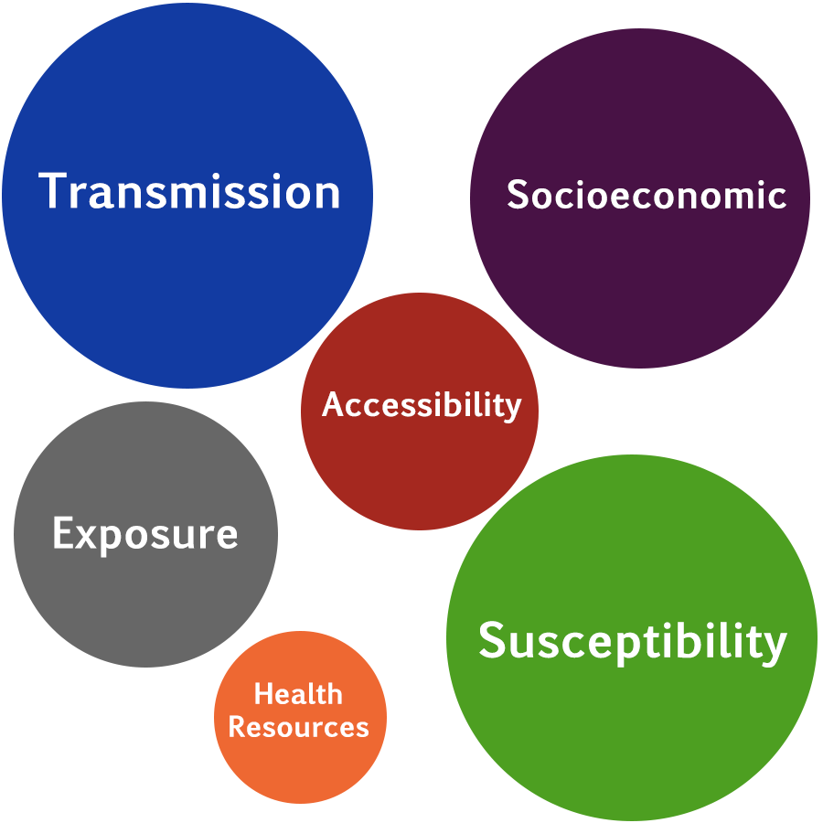
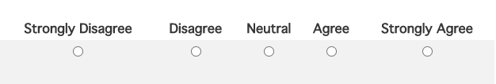

Our website provides users with an interactive way to learn about the different risk factors throughout the counties of Missouri.
Susceptibility (Individual) Risk: How susceptible an individual in a county might be to COVID-19. The inclusion of known and possible co-morbidities and age breaks were assessed.
Transmission (Community) Risk: What the potential transmission risk of COVID-19 within a county might be. The inclusion of commuting, migration, worker types, group gatherings, and living situation.
Socioeconomic Risk:What might be some socioeconomic / demographic variables that would capture and describe the associated social context risk within that county. The inclusion of race, ethnicity, disability, insurance status, veteran status, and education level.
Accessibility Risk: What infrastructure components could be included to provide an assessment of accessibility and establish differences between counties in terms of their access to health options and care. The development and inclusion of various hospital, nursing home, and telehealth access measures as well as broadband metrics.
Health Culture Risk: An assessment trying to establish the variability in county-based measures of health care adherence, health screenings, vaccinations and other measures to determine the range or concentration of possible cultural & regional impacts to good health maintenance.
Exposure Risk:Incorporated existing exposure metrics (cases, testing, deaths) as temporally collected to aid in the development of associations, correlations, and trends.
Transmission (Community) Risk: What the potential transmission risk of COVID-19 within a county might be. The inclusion of commuting, migration, worker types, group gatherings, and living situation.
Socioeconomic Risk:What might be some socioeconomic / demographic variables that would capture and describe the associated social context risk within that county. The inclusion of race, ethnicity, disability, insurance status, veteran status, and education level.
Accessibility Risk: What infrastructure components could be included to provide an assessment of accessibility and establish differences between counties in terms of their access to health options and care. The development and inclusion of various hospital, nursing home, and telehealth access measures as well as broadband metrics.
Health Culture Risk: An assessment trying to establish the variability in county-based measures of health care adherence, health screenings, vaccinations and other measures to determine the range or concentration of possible cultural & regional impacts to good health maintenance.
Exposure Risk:Incorporated existing exposure metrics (cases, testing, deaths) as temporally collected to aid in the development of associations, correlations, and trends.
Procedure:
You will need 25 minutes to complete this evaluation. Evaluations cannot be saved; it is ideal that all tests are performed in the same session.
1. You will take a user survey to provide information about the organization to which you belong and your experience using dashboards.
No identifer information will be collected.
2. You will evaluate the "Risk Categories" and "Counties" dashboards in two ways:
a. Tasks - you will perform a set of tasks where mouse-clicks and task duration will be captured.
1) Read the task carefully.
2) Click "start task" as seen in the image below, and perform the task.
3) Once you have completed the task, click "complete task"
4) A new task will appear, repeat steps 1-4

b. Survey - you will be prompted with questions regarding your experience using the dashboard.
1) Answer each question by selecting a value in the 1-5 scale.
2) Answer all questions.
